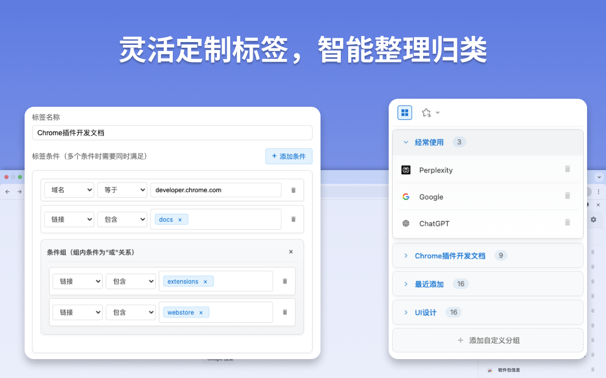

Smart Bookmark
基于 AI 的智能书签管理插件，让书签管理变得更加智能和省心！
我可以为你做什么？
AI 自动生成标签
收藏网页时，智能生成相关标签，无需手动归类，彻底告别繁琐的文件夹！
语义化搜索
记不住关键词也不用担心，用自然语言描述内容即可快速找到目标书签。
自定义筛选规则
支持按标题、标签、网址等筛选规则，轻松实现书签自动归类，管理更加高效。
WebDAV 同步
跨设备自动同步您的书签数据，随时随地访问您的收藏，告别数据孤岛！
深色模式
支持浅色/深色主题切换，夜间使用更护眼，提供舒适的阅读和管理体验。
书签批量管理
一键选择多个书签进行标签修改、移动或删除，高效处理大量书签，节省您的时间。
功能介绍
智能标签生成
收藏网页时，AI 自动分析页面内容，生成相关标签，让书签自动归类，再也不用手动整理。
语义化搜索
使用自然语言描述即可搜索，比如"上次看的那个关于深度学习的教程"，AI 帮你快速定位目标书签。
智能筛选规则
设置自定义的筛选规则，根据标题、网址、标签等条件，自动对新增的书签进行分类和管理。
